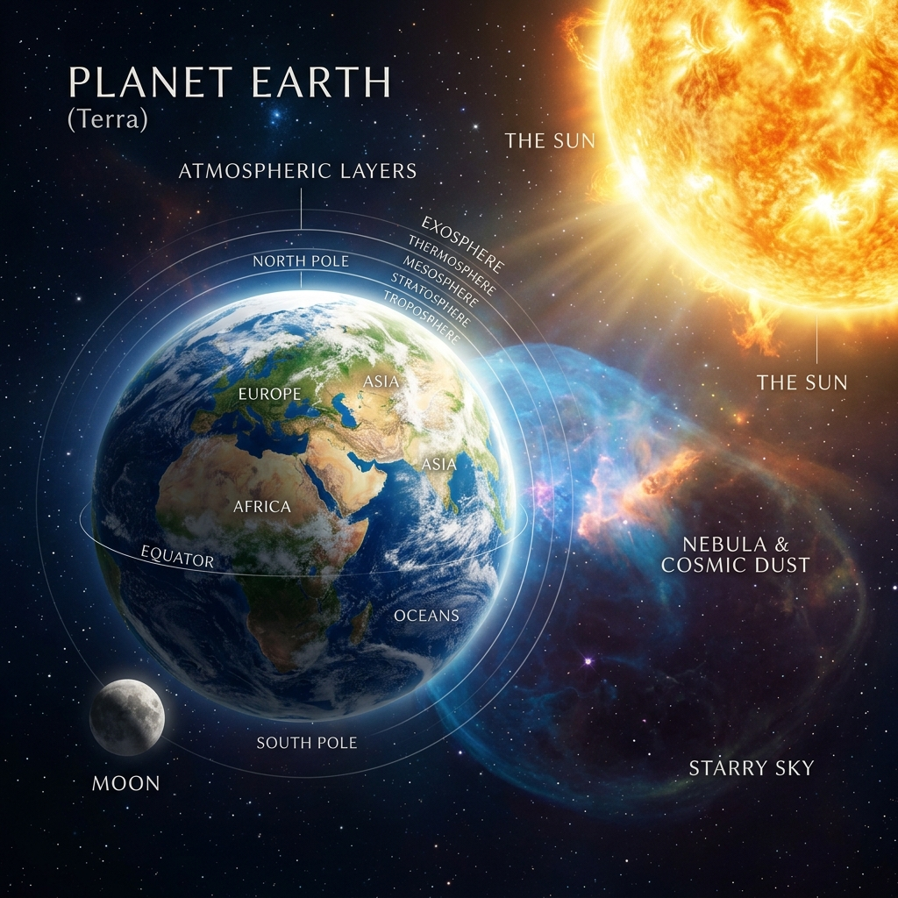
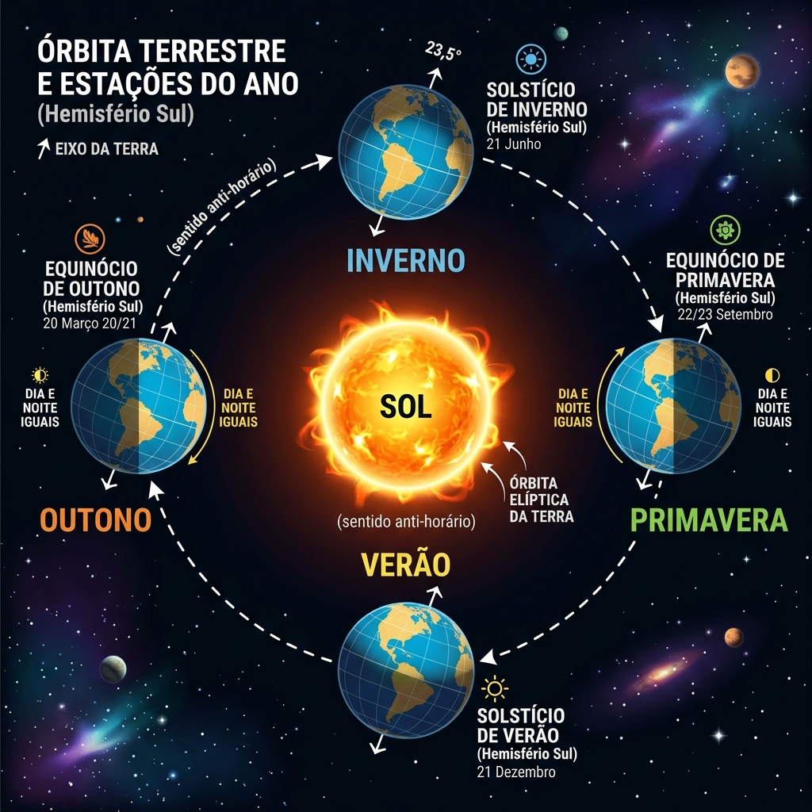

1. Que formato tem a Terra?
Olhando do espaço, a Terra parece uma esfera azul perfeita. Mas sabia que ela não é bem assim?
A Terra possui uma forma conhecida como Geoide (ou esferoide oblato). Isso significa que ela é ligeiramente achatada nos polos (Norte e Sul) e tem uma saliência na linha do Equador.
Como sabemos que a Terra é arredondada?
- Viagens espaciais: Satélites e astronautas tiram fotos reais da Terra mostrando sua forma.
- Navios no horizonte: Quando um navio se afasta no mar, ele parece "descer" na curva da Terra, desaparecendo primeiro o casco e depois o mastro.
- Eclipses lunares: A sombra que a Terra projeta na Lua durante um eclipse é sempre redonda!

Ilustração da Terra iluminada pelo Sol no espaço sideral.
2. Os Dois Grandes Movimentos Terrestres
Movimento de Rotação
O giro da Terra ao redor de si mesma.
A Rotação é o movimento que a Terra realiza ao redor do seu próprio eixo imaginário (como se fosse um pião). Esse eixo é inclinado em relação ao espaço.
| Sentido: | De Oeste para Leste (anti-horário) |
| Duração: | Aproximadamente 24 horas (1 dia solar) |
| Velocidade: | Cerca de 1.670 km/h na linha do Equador! |
| Efeito Principal: | Sucessão de dias e noites. Sem a rotação, um lado da Terra seria sempre dia (muito quente) e o outro sempre noite (gelado). |
Movimento de Translação
A viagem da Terra ao redor do Sol.
A Translação é o caminho ou órbita elíptica que a Terra percorre em torno do Sol. Juntamente com a inclinação de 23,5° do eixo da Terra, este movimento define o nosso clima ao longo do ano.
| Caminho: | Órbita elíptica (quase circular) ao redor do Sol |
| Duração: | 365 dias e 6 horas (1 ano) |
| Ano Bissexto: | As 6 horas que sobram a cada ano acumulam e, após 4 anos, formam 24 horas (1 dia). Esse dia é adicionado em 29 de fevereiro! |
| Efeito Principal: | As quatro estações do ano (Primavera, Verão, Outono, Inverno) ocorrem porque a inclinação faz com que os hemisférios recebam luz de forma desigual. |

Diagrama mostrando a inclinação terrestre constante e as posições de solstício e equinócio.
Solstícios e Equinócios
Conforme a Terra orbita o Sol, a quantidade de radiação solar que atinge cada hemisfério muda. Esses momentos especiais têm nomes científicos importantes:
-
Solstícios: Ocorrem quando o Sol atinge a máxima inclinação ao norte ou ao sul do equador.
É o momento em que a diferença de luz entre o norte e o sul é máxima.
Dezembro: Verão no Hemisfério Sul (dias mais longos) e Inverno no Norte.
Junho: Inverno no Hemisfério Sul (noites mais longas) e Verão no Norte. -
Equinócios: Significa "noites iguais". Ocorrem quando os raios solares incidem diretamente
sobre a Linha do Equador. Ambos os hemisférios recebem luz de forma igual.
Março e Setembro: Dias e noites têm exatamente a mesma duração (12 horas cada) e marcam o início da Primavera e do Outono.
3. Simulador Interativo do Espaço
Use os controles abaixo para alternar os movimentos e ver a ciência em ação!
Carregando Simulação...
A simulação em canvas está inicializando. Selecione Rotação ou Translação no painel de controle.
Painel de Controle
4. Quiz do Espaço: Teste seus conhecimentos!
Responda às questões e verifique se você aprendeu tudo sobre os movimentos da Terra!
Título do Feedback
Texto explicativo da questão.
Grau de Astronauta
Mensagem de feedback final sobre o resultado do quiz.